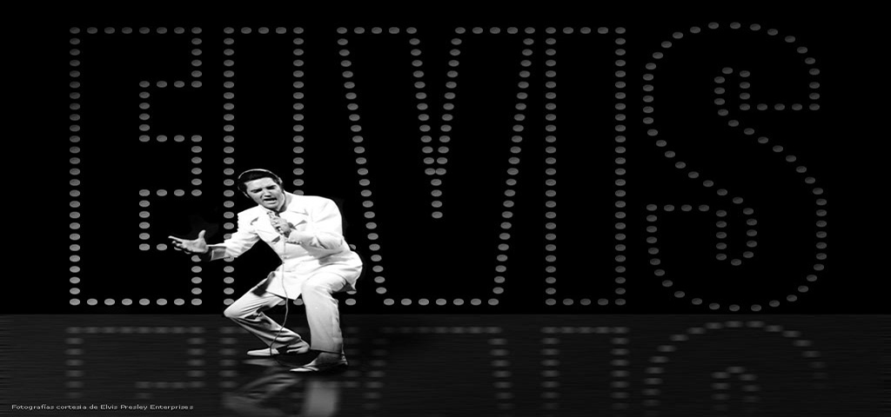

Elvis Presley
"Probably The Greatest Rock & Roll Singer of all Time"

Known as the "King of Rock & Roll", & one of the Most Significant Cultural icons of the 20th Century.
Elvis Presley's Life:
- 1935–1953: Born on 8th January 1935, his early childhood years in Tupelo Mississippi, spent his Teenage life in Memphis Tennessee after relocating when he was 13.
- 1953–1956: First Recordings, were with Sam Phillips at Sun Records, Early live performances and RCA Victor contract, Louisiana Hayride, Radio Commercial, & First Television Performances.
- 1956–1958: Commercial Breakout and Controversy, First National TV Appearances and Debut album, Milton Berle Show and "Hound Dog" Steve Allen Show and first Sullivan appearance, Crazed crowds and film debut, Leiber and Stoller collaboration and draft notice.
- 1958–1960: Military Service and his Mother's Death
- 1960–1968: Focus on films, Elvis Is Back, Lost in Hollywood.
- 1968–1973: Comeback, Elvis: the '68 Comeback Special, From Elvis in Memphis and the International, Back on tour and meeting Nixon, Marriage breakdown and Aloha from Hawaii.
- 1973–1977: Health deterioration, Medical crises and last studio sessions, Final months and his death Aged 42.